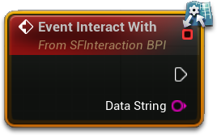
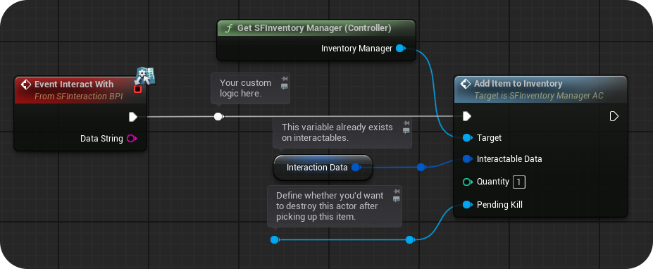
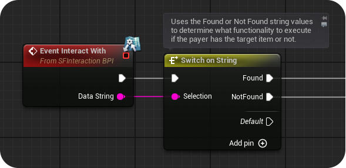

交互方式
SF 的交互系统总共支持 5 种不同的交互方式。它们用于创建各种可交互物体，从简单的拾取物到可以实际拖动的物体，每种交互方式的工作方式都完全不同。交互方式分为两类：主交互方式（Primary Interaction Method，PIM） 与 次交互方式（Secondary Interaction Method，SIM）。
交互物的 PIM 可以设为这 5 种交互方式中的任意一种；SIM 则只能设为“无（None）”或“检视（Inspect）”。这意味着，任何交互物都可以在主交互之外，再给玩家提供一个检视物品/物体的选项。
SF 中的交互会调用交互物蓝图里的 事件已交互(Event Interacted With) BPI 函数。我们使用接口函数，与任何实现了 SFInteraction_BPI 蓝图接口的 Actor 轻松通信。上面提到的 BPI 函数还包含一个 数据字符串(Data String) 输入变量；这个字符串用于在现有交互方式之上追加更多交互选项。

你会在示例地图的交互物上看到各种交互方式，它们演示了这些方式的实际用法。
下面会逐一拆解 5 种交互方式，以及它们的用法。
— 默认交互（Default Interaction）
这是最通用的交互方式，主要用于在玩家与你的物体交互时，设置自定义功能。使用这种交互方式时，不会执行任何自定义逻辑，唯一被调用的函数就是 事件已交互(Event Interacted With) BPI 函数。
— 检视交互（Inspect Interaction）
这种交互方式会生成 InspectActor_BP 蓝图类，显示一个可旋转的 3D 网格体；也可以根据你选择的检视方式，创建一个供玩家阅读的文本覆盖层。3D 检视支持静态网格体与骨骼网格体，也支持指定一个自定义 Actor，在检视物体时生成。这种交互方式可以定义以下属性：
检视方式(Inspect Method)枚举(Enum)：平移到物体（Pan to Object）、3D 检视（3D Inspect）、可读（Readable）或 3D 检视 + 可读（3D Inspect + Readable）检视 Actor 类(Inspect Actor Class)Actor 类(Actor Class)（可选）检视时可否拾取(Can Item be Picked Up when Inspecting)布尔(Bool)3D 检视物体距摄像机距离(3D Inspect Object Distance from Camera)浮点(Float)3D 检视物体偏移(3D Inspect Object Offset)三维向量(Vector3D)可读文本颜色(Readable Text Color)颜色(Color)可读文本页与页面图像(Readable Text Pages, and Page Images)字符串(String) 与 纹理 2D(Texture2D)（可选）
这种交互方式同样会调用 事件已交互(Event Interacted With) BPI 函数。
— 快速拾取（Quick Pickup）
这是一种用于快速创建可拾取物品的交互方式：玩家拾取后，物品会加入玩家的快捷物品栏。在这里可以定义以下属性：
物品栏图标(Item Inventory Icon)纹理 2D(Texture2D)可使用(Can Use)、可组合(Can Combine)、可丢弃(Can Drop)布尔(Bool)
快速拾取交互方式不会调用 事件已交互(Event Interacted With) BPI 函数，因为这种交互方式会在该函数被调用之前，就销毁交互物并将其加入玩家物品栏。如果你想在拾取物品之前执行自定义逻辑，应该改用默认交互方式，先设置好自定义逻辑，然后再调用物品栏管理器 Actor 组件上的 将物品添加到物品栏(Add Item to Inventory) 函数。

— 需要道具交互（Has Item Interaction）
这种交互方式要求你定义要在玩家物品栏中搜索的物品，并通过 数据字符串(Data String) 的值执行两种不同的交互（已找到 Found / 未找到 Not Found）。还可以定义以下属性：
物品栏物品(Inventory Items)（名称与数量）文本(Text) 与 整数(Int)消耗物品(Consume Items)布尔(Bool)玩家必须拥有全部物品(Must Player Have All Items)布尔(Bool)（如果设为 false，只要玩家拥有列表中任意一种物品的正确数量，就能执行“已找到”分支）提示物品数据(Prompt Item Data)字符串(String) 与 纹理 2D(Texture2D)（可选属性；设置后会在交互提示上方显示所需物品及其数量。需要目标物品名称与用于显示的图标）
这种交互方式会调用 事件已交互(Event Interacted With) BPI 函数，并传入两个不同的 数据字符串(Data String) 值（Found 与 Not Found）。随后可以把该字符串连接到 按字符串切换(Switch on String) 节点，根据交互时是否找到所需物品，执行不同逻辑。

— 拖拽交互（Drag Interaction）
拖拽交互允许玩家用准星实际拖动来移动物体。这种交互方式可以影响位置或旋转。可自定义的值有：
受影响轴(Effected Axis)三维向量(Vector3D)（应只定义一个轴，例如设为“1,0”）拖拽速度倍率(Drag Speed Multiplier)浮点(Float)距原点拖拽距离(Drag Distance from Origin)（最小值与最大值）浮点(Float)摆动/旋转(Swing/Rotate)布尔(Bool)（会使用“受影响轴”作为旋转轴）摄像机聚焦模式(Camera Focus Mode)枚举(Enum)（玩家摄像机是否、以及如何跟踪被移动的物体）播放移动声音(Play Moving Sounds)声音基类(Sound Base)（指定物体移动时，以及移动到接近原点时播放的声音）
“拖拽”过程中，随着玩家准星移动，事件已交互(Event Interacted With) BPI 函数会被持续调用，并把玩家移动/旋转交互物的量传入 数据字符串(Data String)。你可以利用这一点制作解谜或逻辑：只有玩家把“拖拽”交互物移动或旋转到特定方向/距离时，才执行对应逻辑。
新手理解： 五种方式可以记成：默认（自己写逻辑）、检视（拿近看）、快速拾取（直接进包）、需要道具（钥匙开门）、拖拽（用手拉）。PIM 决定“主操作”，SIM 决定“能不能额外检视”。